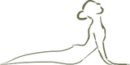
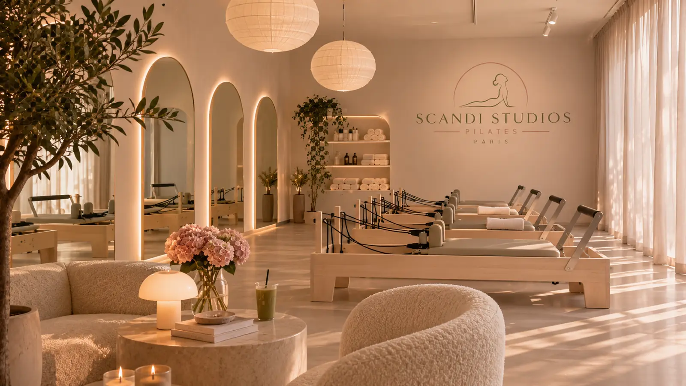
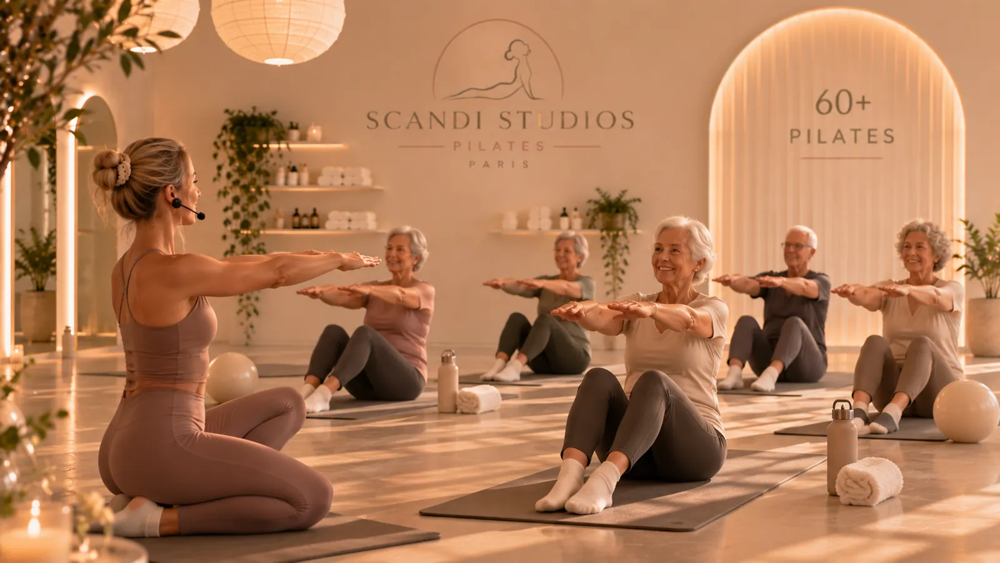
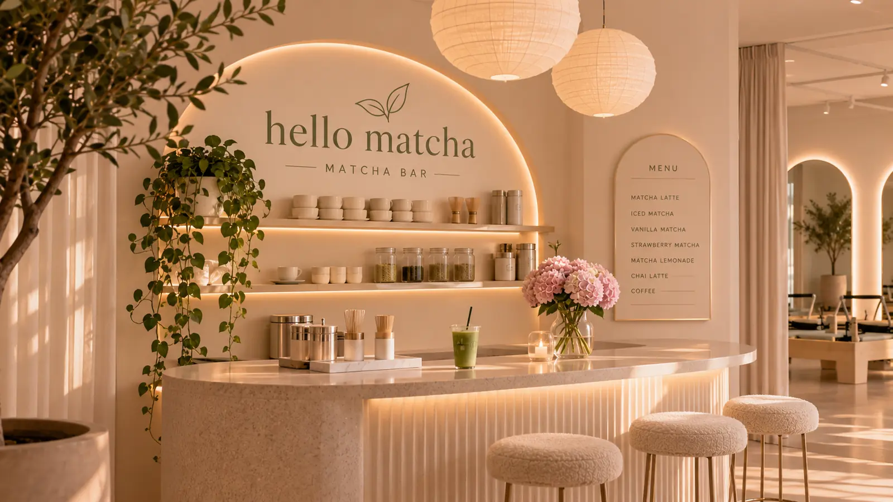

Matwork
Lite text.

SCANDI STUDIOS Boka klassDet här är bara en template, alltså en startpunkt och inte en färdig sida. Header, meny och footer finns med så att alla sidor ser likadana ut, men allt innehåll bygger vi tillsammans. Vi kan lägga till mer i templaten när vi behöver.
Här under finns exempel på allt som finns i templaten. Först kommer koden och sen hur det ser ut på riktigt.
Allt man skriver ska in mellan <main> och </main>. Headern och footern behöver man inte röra.
Exempel 1
Sidorna är uppbyggda av sections som ligger under varandra. Allt man lägger i en section hamnar i mitten automatiskt. Den lilla texten över headingen har class liten-text.
<section
class="sektion beige">
<!-- lilla texten -->
<p class="liten-text">
Liten text</p>
<h2>En rubrik</h2>
<p>Lite text här.</p>
</section>
Så här blir det
Liten text
Lite text här.
Exempel 2
Vi har tre färger till våra sections: beige, rosa och brun. Man skriver bara färgen efter sektion i class. Skriver man ingen färg blir den ljus som den här. Om man väljer brun blir texten och buttons ljusa av sig själv.
Lägg inte två likadana färger efter varandra, då ser det ut som en enda stor section.
<section class="sektion beige"> <h2>Beige</h2> </section> <section class="sektion rosa"> <h2>Rosa</h2> </section> <!-- texten blir ljus --> <section class="sektion brun"> <h2>Brun</h2> </section>
Så här blir det
Exempel 3
Det finns två buttons. Den fyllda (class knapp) är till det viktigaste, till exempel "Boka klass". Den med bara en border (class knapp-ram) är till resten. Om man lägger dem i samma p hamnar de bredvid varandra.
På mörk bakgrund och på stora bilder blir de ljusa automatiskt.
<p>
<!-- fylld knapp -->
<a class="knapp"
href="boka.html">
Boka klass</a>
<!-- bara kant -->
<a class="knapp-ram"
href="klasser.html">
Se klasser</a>
</p>
Så här blir det
Exempel 4
Om man vill ha flera saker bredvid varandra (som klasserna) så använder man cards (class kort). Lägg dem i en div med class kort-rad runt. Det blir max tre på en rad och sen fortsätter de på nästa rad. Bilden får en rund topp automatiskt.
<!-- kort-rad runt om -->
<div class="kort-rad">
<article class="kort">
<img
src="img/matwork.webp"
alt="Matwork">
<h3>Matwork</h3>
<p>Lite text.</p>
</article>
<article class="kort">
<img
src="img/lokal.webp"
alt="Barre">
<h3>Barre</h3>
<p>Lite text.</p>
</article>
<article class="kort">
<img
src="img/60plus.webp"
alt="60+ Pilates">
<h3>60+ Pilates</h3>
<p>Lite text.</p>
</article>
</div>
Så här blir det
Lite text.

Lite text.

Lite text.
Exempel 5
Med class bild-text hamnar bilden på ena sidan och texten på andra. Den som står först i koden hamnar till vänster, så vill man ha bilden till höger lägger man texten först. På mobilen hamnar de under varandra istället.
<div class="bild-text">
<!-- bilden vänster -->
<img
src="img/matchabar.webp"
alt="Coffee bar">
<div>
<h2>Rubrik</h2>
<p>Lite text här.</p>
</div>
</div>
Så här blir det

Lite text här.
Exempel 6
Med class stor-bild får man en stor bild med text ovanpå. Bilden blir lite mörkare så att man kan läsa texten. Den passar bäst högst upp på sidan och då ska man skriva h1 istället för h2 eftersom det är sidans största heading.
<section class="stor-bild">
<!-- bilden först -->
<img
src="img/lokal.webp"
alt="Studion">
<p class="liten-text">
Liten text</p>
<h2>Stor rubrik</h2>
<p>Lite text här.</p>
</section>
Så här blir det
Liten text
Lite text här.
Exempel 7
Om vi inte har fått något från kunden än, till exempel priser, använd class saknas med ??? i. Då syns det tydligt vad som fattas.
<p>Pris:
<span
class="saknas">
???</span>
</p>
Så här blir det
Pris: ???
Exempel 8
Forms blir snygga av sig själva, man behöver ingen class. Skriv required på det som måste fyllas i, då går det inte att skicka utan det. Formen skickas till tack.html.
<form action="tack.html"
method="get">
<label>Namn
<input type="text"
name="namn" required>
</label>
<label>E-post
<input type="email"
name="epost" required>
</label>
<!-- skicka knappen -->
<button type="submit">
Skicka</button>
</form>
Så här blir det
Bra att veta
Bilderna ligger i img foldern. Gör dem små innan de läggs in, helst under 100 kb. Skriv alltid en alt text som säger vad som är på bilden.
Bara en h1 per sida. Skriv inte style="..." direkt i html:en, använd våra classes istället så ser allt likadant ut.
Spara och tryck F5 i browsern för att se ändringarna.